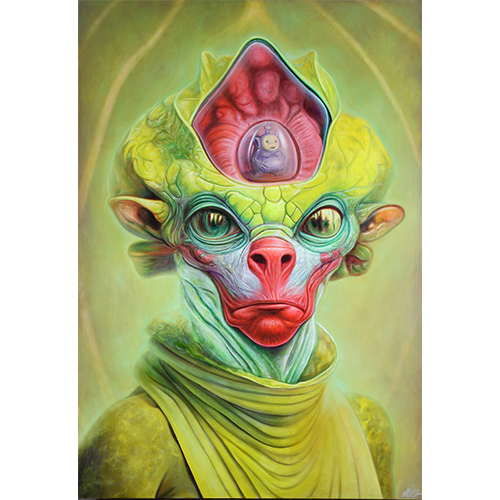
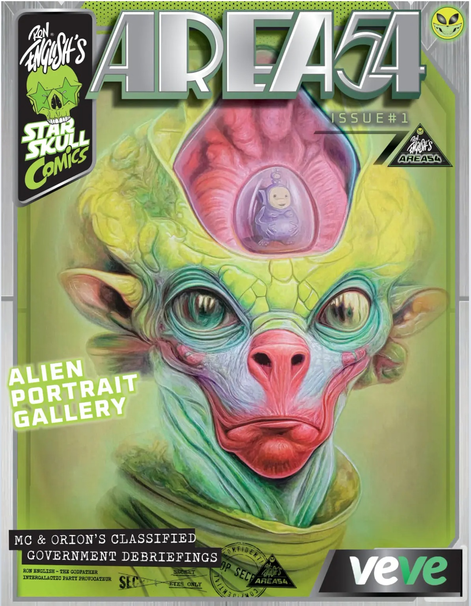

Notes
This composition was later adapted by the artist as a timed-edition fine art print released through 1XRUN on March 7, 2025. The print measured 12 × 16 inches, was produced as an archival pigment print on 290gsm Moab Entrada Fine Art Paper, and the final edition totaled 27 impressions. Each print was signed and numbered by the artist and came with a certificate of authenticity from 1XRUN; see the related print on 1XRUN.
This image appears on VeVe’s digital comic page for Ron English’s Area 54 #1, where it is listed as a preview comic with 4 cover variants and 2,954 total editions; indexed drop metadata gives October 16, 2024, at 8 AM PT and License: Ron English, available here, accessed April 16, 2026.
This work references the children’s television series Teletubbies; a representative image is available here.
Ancillary Documentation

